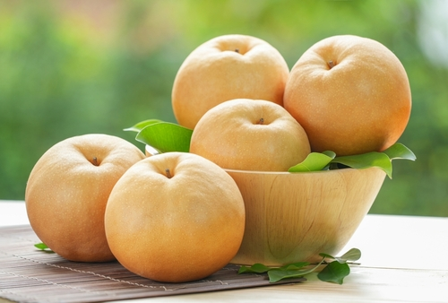
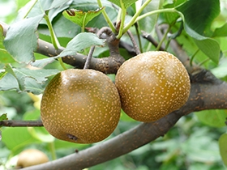
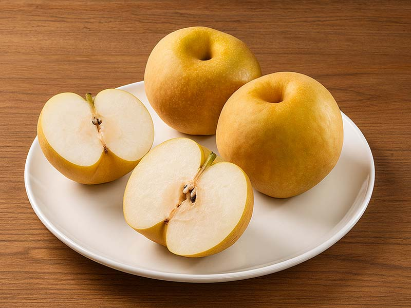
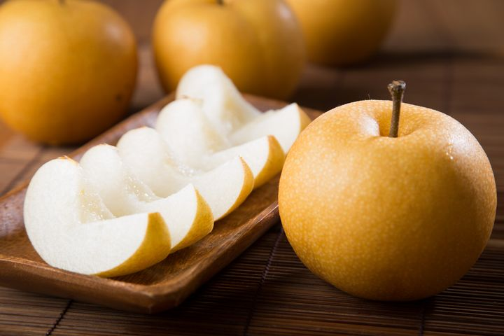
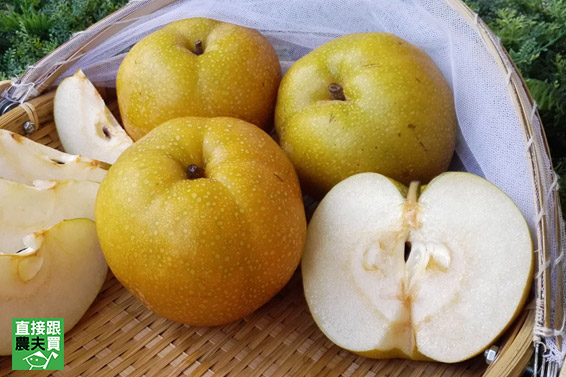
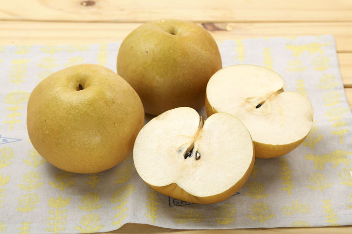

🍐 臺灣梨專業圖鑑
臺北農產運銷公司內部培訓自主學習資料
7 品種完整收錄 · 依農業部農業知識入口網正式分類
梨（砂梨，Pyrus pyrifolia Nakai）為薔薇科梨屬落葉喬木，屬東方梨系統。臺灣栽培的梨主要為砂梨品系，全臺栽培面積約 4,865 公頃，年產約 8.8 萬公噸，產期自 5 月中至 11 月，供應國人近 8 個月。
臺灣梨栽培分為兩大系統：低海拔的橫山梨（早期先民自華南引進）與高海拔的溫帶梨（日本引進，如新世紀、幸水、豐水、新興等）。民國 60 年代，農民發展出「高接梨」栽培技術——將溫帶梨花芽接於橫山梨徒長枝上，使低海拔地區也能生產汁多清甜的溫帶梨，成為臺灣農業技術的一大成就。
產地高度集中於臺中市（栽培面積約 3,306 公頃，占全臺六成以上），核心產區為東勢、和平（梨山）、新社、后里、石岡。近年由劉申權育成的寶島甘露梨（有「梨界 LV」之稱）與寶島晶新梨，更開啟臺灣大果梨的新頁。

臺灣常見梨子對比圖 — 收錄 9 種主流品種（圖：上下游News&Market）
| 縣市 | 栽培面積 | 年產量 | 代表產區 | 主要品種 |
|---|---|---|---|---|
| 臺中市 | 3,306 公頃（約 68%） | 56,502 公噸 | 東勢、和平（梨山）、新社、后里、石岡 | 新興、豐水、甘露、幸水 |
| 苗栗縣 | — | — | 卓蘭、大湖 | 新興、豐水 |
| 宜蘭縣 | — | — | 三星、大同 | 上將梨（高接）、雪梨 |
| 新竹縣 | — | — | 尖石、五峰（高海拔） | 新世紀、雪梨 |
依栽培方式與品種來源分為三大類：

主力 · 東勢為主
幸水 · 豐水 · 新興 · 新世紀
高接梨的基礎 · 原生種
橫山梨 · 倒頭梨
大果 · 梨界 LV
寶島甘露梨 · 寶島晶新梨
幸水梨：日本引進的早生種，品質甚佳但不易貯藏（圖：農業部農業知識入口網）
| 項目 | 特徵 |
|---|---|
| 來源 | 日本引進（早生種） |
| 果實 | 果皮赤褐色，套袋後呈黃色；果形正圓，果頂凹下且深；果點稍粗 |
| 果肉 | 果肉細緻、多汁、味甜清爽，品質甚佳 |
| 糖度 | 11–13°Brix |
| 產期 | 高接 5 月下旬–6 月上旬；高海拔 8 月下旬 |
| 特性 | 品質最佳，但不易貯藏，宜鮮食 |
豐水梨：日本引進，果肉細緻清脆多汁，較耐冷藏（圖：農業部農業知識入口網）
| 項目 | 特徵 |
|---|---|
| 來源 | 日本引進 |
| 果實 | 果皮青褐色，套袋後呈黃色；果形長圓；果點細 |
| 果肉 | 果肉細緻、清脆、多汁、味甜 |
| 糖度 | 10.5–13°Brix |
| 產期 | 高接 6 月上旬–7 月上旬；高海拔 8 月下旬–9 月上旬 |
| 特性 | 品質佳，較耐冷藏，頗受消費者喜愛 |

新興梨：市面上最普遍的高接梨品種，清脆耐藏（圖：農業部農業知識入口網）
| 項目 | 特徵 |
|---|---|
| 來源 | 日本引進，由新世紀梨實生苗選育 |
| 果實 | 果皮青褐色，套袋後呈黃色；果形大、長圓形，較有稜；果點粗 |
| 果肉 | 果肉細，但石細胞較多；多汁、清脆 |
| 糖度 | 10–13°Brix |
| 產期 | 高接 7 月上旬–8 月中旬；高海拔 9 月中旬–下旬 |
| 特性 | 最耐冷藏（可達數月），為最普遍的高接梨品種 |

新世紀梨：皮薄水份多，俗稱「幼梨仔」，可連皮食用（圖：農業部農業知識入口網）
| 項目 | 特徵 |
|---|---|
| 來源 | 日本引進 |
| 果實 | 果皮青色，經遮光套袋後呈白色；果形扁圓 |
| 果肉 | 果肉細脆、果汁多 |
| 糖度 | 10–11°Brix |
| 產期 | 高接 5 月下旬–6 月上旬；高海拔 8 月下旬–9 月下旬 |
| 特性 | 皮薄水份多，如嬰兒肌膚，俗稱「幼梨仔」，可連皮食用 |
橫山梨：低海拔栽培的原生品種，是高接梨的砧木（圖：農業部農業知識入口網）
| 項目 | 特徵 |
|---|---|
| 來源 | 早期先民自中國華南引進 |
| 果實 | 果皮褐色，果形長圓，果粒大 |
| 果肉 | 肉質脆稍粗，石細胞較多，味甜中帶酸 |
| 產期 | 二次：倒頭梨 5–6 月；正期果 8 月下旬–9 月下旬 |
| 地位 | 高接梨的砧木 — 其徒長枝供溫帶梨花芽嫁接，是臺灣高接梨產業的基礎 |
寶島甘露梨：劉申權育成，平均果重超過 800g 的大果梨，有「梨界 LV」之稱（圖：農業部農業知識入口網）
| 項目 | 特徵 |
|---|---|
| 育成者 | 劉申權（民間育種） |
| 品種權 | 民國 107 年 3 月 23 日農授糧字第 1071064538 號 |
| 育種方式 | 雜交品種 |
| 果實 | 果實外觀扁圓，大果（平均果重超過 800g） |
| 果肉 | 肉白、質脆、多汁 |
| 糖度 | 11–12°Brix |
| 產期 | 中低海拔高接 8 月中旬前後；梨山免高接 9 月底–10 月上旬（晚生品種） |
| 栽培 | 花芽形成較晚，平地冬季低溫不足，需剪枝冷藏後回接 |
| 市場 | 近年新興高價品種，以「梨界 LV」聞名，大果送禮市場熱門 |

寶島晶新梨：劉申權育成，平均果重超過 800g，採後貯存風味更佳（圖：農業部農業知識入口網）
| 項目 | 特徵 |
|---|---|
| 育成者 | 劉申權（民間育種） |
| 品種權 | 民國 106 年 10 月 25 日農授糧字第 1061065873 號 |
| 育種方式 | 雜交品種 |
| 果實 | 果實外觀較圓，大果（平均果重超過 800g） |
| 果肉 | 肉白、質脆、多汁 |
| 糖度 | 約 12°Brix；果實採後貯存一段時間風味更佳 |
| 產期 | 中低海拔高接 8 月中旬前後；梨山免高接 9 月底–10 月上旬（晚生品種） |
| 栽培 | 花芽形成較晚，平地冬季低溫不足，需剪枝冷藏後回接 |
| 市場 | 與甘露梨同屬大果新品，貯後風味提升為其特色 |
| 品種 | 類別 | 果皮 | 糖度(°Brix) | 產期（高接） | 核心特色 |
|---|---|---|---|---|---|
| 幸水梨 | 日本系 | 赤褐→黃 | 11–13 | 5 下–6 上 | 品質最佳 · 不易貯藏 |
| 豐水梨 | 日本系 | 青褐→黃 | 10.5–13 | 6 上–7 上 | 清脆多汁 · 較耐藏 |
| 新興梨 | 日本系 | 青褐→黃 | 10–13 | 7 上–8 中 | 最耐藏 · 最普遍 |
| 新世紀梨 | 日本系 | 青→白 | 10–11 | 5 下–6 上 | 皮薄 · 幼梨仔 |
| 橫山梨 | 低海拔砧木 | 褐 | 甜中帶酸 | 5–6 月／8 下–9 下 | 高接梨的基礎 |
| 寶島甘露梨 | 臺灣育成 | — | 11–12 | 8 中／9 底–10 上 | 大果 800g+ · 梨界 LV |
| 寶島晶新梨 | 臺灣育成 | — | 12 | 8 中／9 底–10 上 | 大果 800g+ · 貯存更佳 |